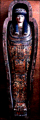
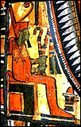

The Minneapolis Institute of Arts
Main Museum Menu ~
Educational Programs ~
Curriculum Materials ~
Teaching the Arts Catalog
Curriculum Materials:World
Mythology

Image 1
Mummy Case of Lady Teshat
Egypt
1085-710 B.C. (21st-24th Dynasty)
Painted and varnished linen
67 inches long
The William Hood Dunwoody Fund 16.414
Key Ideas
- The myths associated with Osiris (oh-SIGH-rus), the Egyptian
god of the Underworld, reflect the agricultural cycle of death and
regeneration and explain the origins of mummification in Egyptian
burial ritual.
- The ancient Egyptians believed that if certain gods were
worshiped, and proper procedures followed, the souls of their dead
would live on in the Underworld.
- The pictures that decorated mummy cases and coffins were
highly symbolic and standardized.
Story
The kind and gentle god Osiris ruled on earth for many years and
brought the gifts of civilization and agriculture to Egypt. He let
his wife-sister, Isis (EYE-sus), rule Egypt for a short time while
he traveled the world to spread law and order and to teach people
farming skills. His brother, Seth, became jealous of Osiris's
popularity and power. So, upon Osiris's return, Seth murdered him,
put his body in an elaborate cedar coffin, and cast it into the
Nile River.
The coffin washed ashore at Byblos (BIB-lus) in Lebanon, where
a tamarisk tree arose and encased it. Impressed by the tree's
tremendous size, the king of Byblos had it cut down and placed as
a pillar in his main hall. Isis searched for her husband's body
and eventually located it in the pillar in the king's hall. She
then won permission to bring his remains back to Egypt. Seth,
furious that his brother's remains had been retrieved, cut
Osiris's body into pieces and scattered them throughout the land.
Isis set out again to find her husband, a much more difficult
task this time. Wherever she found a part of his body, she created
a wax duplicate of the part; she presented the wax part to the
local priest and demanded that it be placed in a temple and
worshiped, so that her husband's memory would be preserved.
When nearly all the body parts were gathered, Isis used her own
great magic, and the help of several other gods, to put Osiris
back together. They preserved his body and wrapped it in linen
bandages, creating the first mummy and establishing the funereal
ritual for all subsequent burials of important people. Magically,
Isis breathed life back into Osiris and the god-king rose from the
dead. But instead of living on earth, Osiris chose to rule in the
Underworld. He left earthly rule up to his son, Horus (HOR-us).
Background
The Osiris myth has grown and changed over time. Osiris was first
worshiped only as a god of vegetation because his life cycle -
birth, death, and rebirth - paralleled the growth cycle of the
crops on which Egyptians depended. He was later associated with
other natural cycles that ordered the Egyptian world, including
the flooding of the Nile and the rising and setting of the sun.
Many Egyptians came to consider him a one-time earthly ruler, or
pharaoh (FAIR-oh), and some viewed him as god of the moon. But it
was his association with strong family ties and eternal life that
made him one of the most widely worshiped gods.
Initially, Osiris was worshiped mainly by the pharaohs and
their royal families because only they, considered descendants of
the gods, were entitled to the privilege of eternal life. However,
by the 18th Dynasty (1551-1310 B.C.), everyone who worshiped
Osiris was promised the possibility of life after death.
As god of the Underworld, Osiris appeared regularly on funereal
objects, including mummy coffins and cases. His presence assured
that the dead man or woman would, like Osiris, rise and live
again.
Mummification
Because the Egyptians believed that each person possessed a
ka (kah), a double that lived on in the Afterworld, they
preserved the dead through a complex system of embalming and
mummification. The prepared bodies were often enclosed in cases
like this one, made of plastered, painted, and varnished linen and
were then placed in decorated coffins. They preserved the body
because the ka could live on only if it had a place to
reside (a body or a ka statue, for example). Many
standardized images covered the cases and coffins to assist the
ka in its passage to the Afterworld.
This mummy case encloses the remains of Lady Teshat (TEH-shet),
a fifteen-year-old girl. Because her father was closely associated
with the pharaoh, she received an elaborate burial.
Detail of Osiris
Symbolic pictures of Osiris appear in several places on Lady
Teshat's mummy case. Each image embodies
ATTRIBUTES that identify the
god. In this painting from the right shoulder he is depicted as an
enthroned king, reinforcing his role as ruler of the dead. (See
detail.) He holds a shepherd's crook and whip,
SYMBOLS of his authority. He
wears the red crown of Lower Egypt decorated with a curly ostrich
plume, to signify his earthly life and reign. His ritual straight
false beard is like those worn by Egyptian pharaohs to indicate
their godly status. The green color of Osiris's skin, associated
with vegetation, symbolizes life after death.
Osiris is tightly wrapped like a mummy in an orange-red
garment, an indication that he lived on after death through
mummification. His stiff pose is also due in part to the
FORMULAIC standard Egyptians
used to show the human body; they regularly depicted the most
characteristic aspects of a figure. The head, legs, and feet are
shown in profile, while the eye and shoulder are represented as
though seen from the front.
At the base of the throne is a stacked form, which might be a djed
(jed) pillar. The djed pillar represents Osiris's backbone
(certainly an appropriate image for a mummy case), recovered by
Isis; to the Egyptians it symbolized stability and continuity.
Discussion Questions
Look
1. Osiris was the first Egyptian to be mummified. How has
the artist shown that Osiris was mummified? Hint: Look at the
lower half of his body.
2. What colors did the artist use to depict Osiris? Look at
his hands and face. Is this a natural skin color?
3. An outline is a line that describes the outside edge
of an object or figure. Where do you see outlines in the figure of
Osiris? (Torso and legs, crown, face, wrists, and hands.)
Does the outline make the figure of Osiris appear flat or
THREE-DIMENSIONAL?
(Heavy outlines weight the figure down and make it appear
flat.)
4. Is Osiris painted from a side view or a frontal
view? (Both.) Which of Osiris's features are viewed from
the side? (Face, hands, and legs.) Which are viewed from
the front? (Torso.) Is this an active figure or a still
figure? What makes it seem so still? Consider: outline,
NATURALISTIC
detail. (Stiff pose and outline make the figure appear
TWO-DIMENSIONAL, lack
of modeling on figure and lack of detail discourage visual
movement.)
5. An ATTRIBUTE is
a distinctive symbolic feature that identifies a character.
Discuss Osiris's attributes and their symbolic meaning.
Find Osiris's attributes: throne, shepherd's crook and whip,
red crown with ostrich plume, beard, and green skin. Do you think
you could identify Osiris by his figure alone, without his
attributes? Why not? (Egyptian figural
STYLE is standardized. All
figures look the same - human! They have no distinct individual
characteristics.)
Think
1. Osiris is god of vegetation, god of the Underworld, and
god of the moon. Which of these roles do you think his green skin
refers to? (God of vegetation.)
In what ways does green suggest life and growth? (The color
green in plants indicates life; green is associated with spring, a
time of growth.) Green has other symbolic meanings in
present-day American cultures too. What meanings of green can you
think of? ("Green with envy"; "green around the gills," meaning
illness.)
2. Why do you think it was important to have Osiris
represented on this mummy case? Recall Osiris's role as god of the
Underworld. How did Osiris help the ka in its passage to
the Afterworld?
3. Do you think the Egyptian artist who painted this
mummy case was interested in showing us what Osiris really looked
like, in telling his story, or in showing us his special powers?
Explain your answer. (Parts of Osiris's story are recalled in
his mummy wrapping and green skin. Special powers are identified
by his attributes: throne, shepherd's crook and whip, crown with
ostrich plume, and beard. Individual characteristics are
unimportant in Egyptian figural style.)
4. A leading theologian makes the following
argument:
Now the vast majority of European art, including Greek art as
well, is religious art. It was conceived and executed by religious
people who aspired to express their homage to (a) God. Therefore,
a nonbeliever cannot possibly understand or experience the music,
the paintings, the poetry, or any artform created by believers.
Is the theologian right about what nonbelievers can understand
of religious art? Do we have to believe in Osiris as a god and pay
homage to him in order to understand and appreciate this painting?
(No right answer.)
Main Museum Menu ~
Educational Programs ~
Curriculum Materials ~
Teaching the Arts Catalog